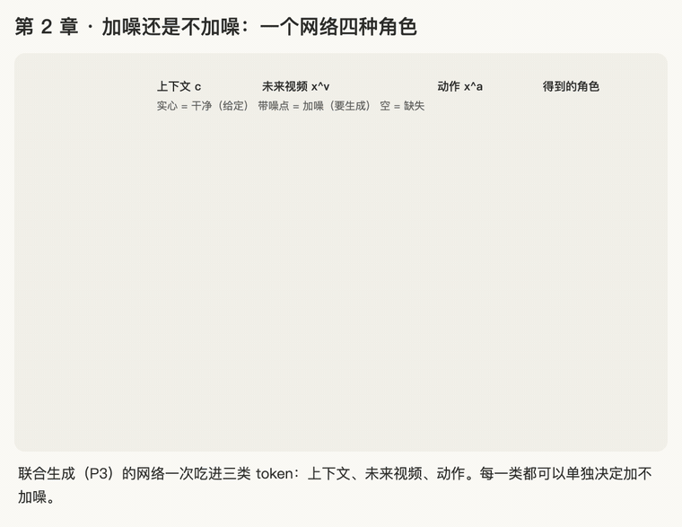
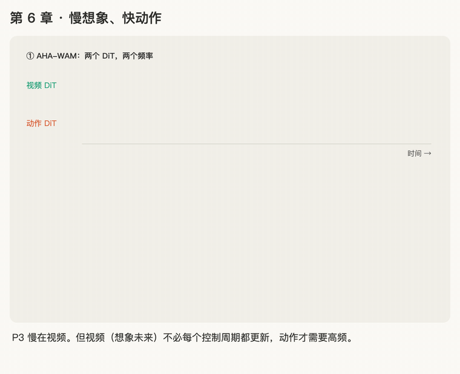
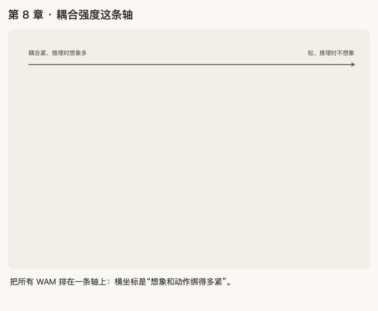
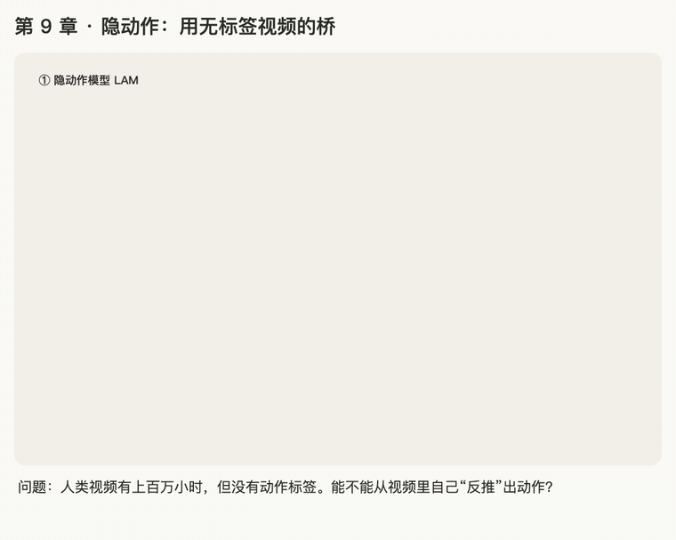
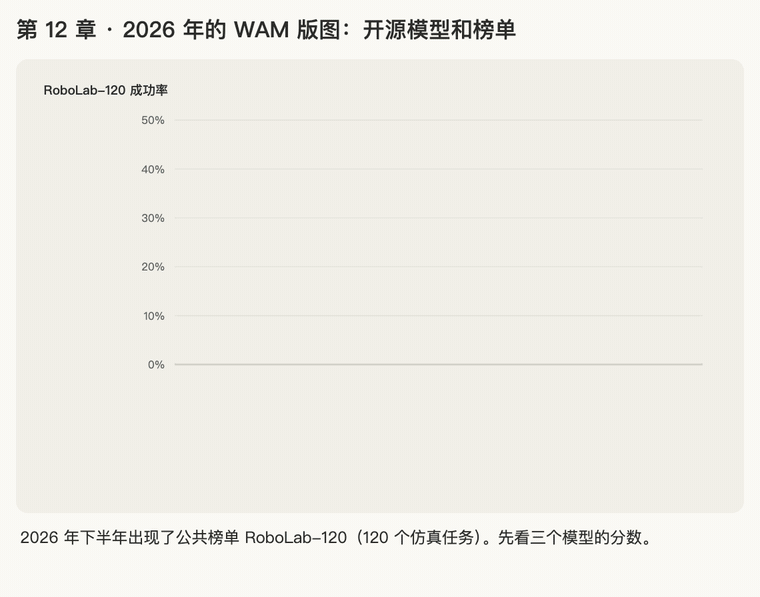

世界模型与 WAM 流派 · 讲义目录
13 章 · 13 个动画（GIF + 可交互页面）· 14 张复习卡片（编号 C） · 覆盖 2026 年 11 月以前的世界模型与世界动作模型（WAM）主要流派
这本书讲什么
从"世界模型和 WAM 各回答什么问题"讲起：联合生成怎么用一个网络当世界模型、逆动力学和 policy 三种角色，怎么训练、怎么推理；再看 2026 年下半年的新进展（推理时不想象的 Fast-WAM、慢想象快动作的双频设计、长上下文、开源模型和公共榜单），最后把先想后做、借视频特征、辅助 loss、隐动作、世界模型五派放到同一张地图上，落到"什么场景选哪派"。
- 适合谁：知道 policy / VLA 是什么，听说过扩散或 flow matching；概率只用到条件概率和链式法则，用到时现场讲。
- 读完能做什么：拿到一篇新的世界模型或 WAM 论文，能说出它属于哪一派、训练时和推理时各生成什么、快慢和数据要求大概在哪个量级、榜单分数该怎么看。
- 怎么读：按章顺序读。每章先看讲解和动画，再自己做练习，最后用复习卡片隔几天考自己。
讲解的特点
- 每章一个动画：GIF 嵌在讲义"动画演示"一节，同名
.html打开就自动播放，点按钮可单步，目录见 animations/README.md。 - 一次一小步：每个概念按"白话类比 → 公式（每个符号说清楚怎么读）→ 小数字算一遍"讲。
- 对照原文：引用的课程讲义和论文标了本地文本的行号；新论文只读了摘要的、来自新闻或公司自报的数字都单独标注。
- 保留真实的学习过程：练习与作答记录里是学习时的原话、对错和点评。
- 术语不设门槛：缩写第一次出现就给英文全称并逐词解释，全书缩写见 缩写与术语表。
示例动画
 第 2 章 同一个网络，挖空哪里就当什么角色 · 讲义 · ▶ 交互 |
 第 4 章 少走几步、每块换成真实画面 · 讲义 · ▶ 交互 |
 第 6 章 视频低频、动作高频，2v4a · 讲义 · ▶ 交互 |
 第 8 章 P1 到纯 VLA 排成一条轴 · 讲义 · ▶ 交互 |
 第 9 章 从两帧里挤出隐动作 · 讲义 · ▶ 交互 |
 第 12 章 榜单分数和误差线 · 讲义 · ▶ 交互 |
全部动画见 animations/README.md。
和其他材料的关系
由调研报告 ../survey-wm-vs-wam-schools.md 拆成的分步讲解，一章一个小概念。每章结构相同：本章回答的问题 → 讲解（白话类比 → 公式 → 例子）→ 动画演示 → 练习与作答记录 → 口诀 → 本章复习卡片 → 附录 · 延伸阅读。
- 前置：CIS 6280 第 2 讲的形式化（../lecture-02-history-foundations-formulation.md）；flow matching 的直觉见 vla-deep-dive 第 8 章 π0；
- JEPA、隐动作、LaWAM 的细节放在 nvidia-cosmos3 讲义 路线的第 5–8 步，本系列只讲它们在"流派地图"里的位置；
- 复习卡片集中在 ../review.md，编号以 C 开头；
- 每章动画见 ../animations/（讲义里嵌 GIF，html 可交互）；
- 缩写与术语见 appendix-glossary.md。
路线（2026-11-04 定，2026-11-20 加入 2026 年下半年的新进展，9 章 → 13 章）
| 步 | 主题 | 一句话 | 新增 |
|---|---|---|---|
| 1 | 两个问题：做了会怎样 vs 该做什么 | 世界模型预测后果，WAM 首先是 policy | |
| 2 | 加噪还是不加噪：一个网络当四种角色 | 联合生成（P3）里，谁干净、谁加噪决定了它是世界模型、IDM 还是 policy；GR00T 2 的单塔做例子 | |
| 3 | 联合生成怎么训练 | flow matching 损失、动作 loss 加权、无动作视频怎么用 | |
| 4 | 联合生成怎么推理 | 去噪步数、丢掉视频、用真实观测重新锚定（DreamZero） | |
| 5 | 推理时还要想象吗 | 训练时想象、推理时不想象也行：Fast-WAM、HWAM | ✚ |
| 6 | 慢想象、快动作 | 视频低频、动作高频：AHA-WAM 双塔、GR00T 2 的 2v4a 缓存 | ✚ |
| 7 | 记得更久：长上下文 | 从 6 s 到 19 s：Long-WAM | ✚ |
| 8 | 耦合强度这条轴 | 先想后做（P1）→ 借特征（P2）→ 联合（P3）→ 辅助 loss（P4）→ 纯 VLA；对照新综述的三分法 | |
| 9 | 隐动作：用无标签视频的桥 | 从前后两帧反推"发生了什么变化"（细节接 cosmos3 第 7–8 步） | |
| 10 | 世界模型五派：在哪个空间预测 | 隐状态、任务信号、特征、像素、3D/物理 | |
| 11 | 推理的四种用法 | 离线想象、在线规划、直接出动作、交互模拟；频率和延迟 | |
| 12 | 2026 年的 WAM 版图：开源模型和榜单 | GR00T 2、Praxis-1、FLUX 3 Action、Cosmos 3；RoboLab-120 的分数怎么读 | ✚ |
| 13 | 选型与前沿 | 场景 → 流派；代码流（AW-0）、可控 WAM（CtrlWAM）、人形 | 扩充 |
新进展的出处和数字见调研报告 §10。GR00T 2 已有单独一本讲义（gr00t2/notes/lessons），这里第 2、6、12 章只用它做例子，细节去那边读。
目录
| 章 | 主题 | 一句话精要 | 动画 | 卡片 | 状态 | |---|---|---|---|---| | 1 | 两个问题：做了会怎样 vs 该做什么 | 世界模型预测后果，WAM 首先是 policy | ▶ | C01、C02 | 进行中（题 3 待答） | | 2 | 加噪还是不加噪：一个网络当四种角色 | 谁加噪谁干净，决定它是世界模型、IDM 还是 policy | ▶ | C03 | 练习待答 | | 3 | 联合生成怎么训练 | flow matching loss、动作 ×10、无动作视频、时间对齐 | ▶ | C04 | 练习待答 | | 4 | 联合生成怎么推理 | 16→4→1 步、丢视频、用真实观测重新锚定 | ▶ | C05 | 练习待答 | | 5 | 推理时还要想象吗 | 收益来自训练时学视频：Fast-WAM、HWAM | ▶ | C06 | 练习待答 | | 6 | 慢想象、快动作 | AHA-WAM 双塔、GR00T 2 的 2v4a | ▶ | C07 | 练习待答 | | 7 | 记得更久：长上下文 | 记忆就是上下文，Long-WAM 6 s → 19.2 s | ▶ | C08 | 练习待答 | | 8 | 耦合强度这条轴 | P1 → P2 → P3 → P4 → 纯 VLA，综述三分法 | ▶ | C09 | 练习待答 | | 9 | 隐动作：用无标签视频的桥 | 窄瓶颈只装得下"变了什么" | ▶ | C10 | 练习待答 | | 10 | 世界模型五派：在哪个空间预测 | 隐状态、任务信号、特征、像素、物理 | ▶ | C11 | 练习待答 | | 11 | 推理的四种用法 | 离线想象、在线规划、直接出动作、交互模拟 | ▶ | C12 | 练习待答 | | 12 | 2026 年的 WAM 版图：开源模型和榜单 | 五个模型、MoE、标准误、读榜三件事 | ▶ | C13 | 练习待答 | | 13 | 选型与前沿 | 五个问题依次砍，前沿方向和开放问题 | ▶ | C14 | 练习待答 | | 附录 | 缩写与术语表 | 全书的缩写和术语 | — | — | 已完成 |
口诀汇总
| 章 | 口诀 |
|---|---|
| 1 | 给动作、问后果，是世界模型； 给目标、要动作，是 policy； 要动作时顺便想未来，是 WAM，看的还是成没成功。 |
| 2 | 完形填空看挖哪：挖结果是世界模型，挖动作是 IDM； 两样都挖是 policy，动作没有就纯看视频； τ 为零是条件，τ 为一是题目。 |
| 3 | 糊层雾，猜方向，平方误差打分数； 动作 token 少，权重乘十才不被淹； 没动作的视频只算视频那一项； 块长对齐 latent 帧，换频率就重算。 |
| 4 | 纯噪出发往回擦，步数乘前向就是延迟； 视频陪聊不解码，动作才交给机器人； 执行一块睁次眼，预测换成真画面。 |
| 5 | 练时想象，用时不想； A 比 B 看推理，B 比 C 看训练； 训练像 P3，推理像 P4； 快了，但看不见它想了什么。 |
| 6 | 看导航要稀，打方向要密； 双塔一慢一快，快的读慢的笔记； 单塔 2v4a，视频算二动作算四； 第五章不想，第六章少想。 |
| 7 | 记忆就是上下文，几秒就记几秒； 多记一秒多一秒 token，全注意力按平方涨； 因果预训练，历史只算一次； 秒级靠帧，分钟靠码。 |
| 8 | 先想后做最松最慢，借特征只看一眼； 联合生成边想边做，辅助 loss 练完就拆； 往左看得见，往右跑得快； 四个盒子一条轴，综述切成三段。 |
| 9 | 只许发一个表情，只够说变了什么； 甲看两帧乙看一帧，窄缝里挤出隐动作； 先懂变化再让它变，最后换成自己的手； 部署和 VLA 一样快，视频只过一条缝。 |
| 10 | 画家画像素，气象员报物理，棋手只说好坏； 速记员记隐状态能还原，观察者说特征不画细节； 重建贵而看得见，不重建省而画不出； 先压缩再预测，五派底座越来越像。 |
| 11 | 离线想，部署不想，快如 VLA； 在线规划步步搜，慢到几秒几分钟； 直接出动作想做一体，几 Hz 到二十几； 交互模拟出画面，给人玩来给策略考。 |
| 12 | 视频公司改底座，七 B 到二十七 B 开放了； 总参数看容量，激活参数看速度； 分数先算误差线，差距要比合并误差大； 再问谁跑的榜，换个榜还算不算。 |
| 13 | 先问要动作还是要未来，再问奖励模拟器； 预算定快慢，泛化定 P3，数据定桥； 结论之后写放弃，前沿补码补听话； 放大、评测、记忆、被骗、像素、想多少，都还在路上。 |